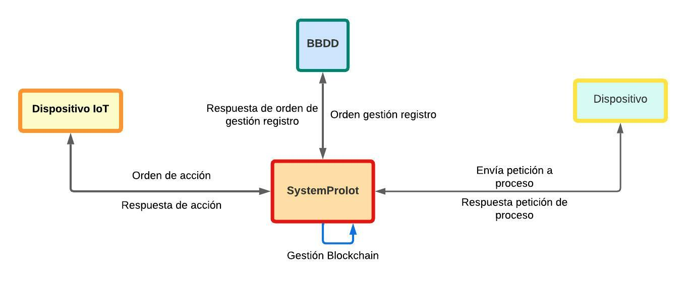
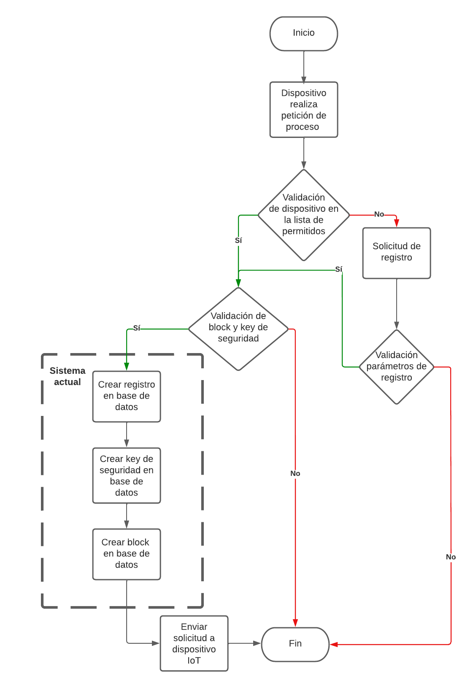

<div class="row justify-content-center">
  <div class="col-8">
    <div>
      <h2 data-cy=""><span jhiTranslate="systemProIotApp.documentation.detail.title">Documentation</span></h2>

      <hr />

      <jhi-alert-error></jhi-alert-error>

      <jhi-alert></jhi-alert>

      <div class="row-md jh-entity-details">
        <h3>Objetivo</h3>
        <p>
          Proveer un ambiente de gestión de historial de acceso y conexión para detectar posibles ingresos no autorizados al entorno IoT.
        </p>

        <h3>Descripción</h3>
        <p>
          Este sistema busca contribuir a la seguridad de entornos IoT desde una perspectiva externa sin involucrar las configuraciones
          extensas y de bajo nivel existentes en un entorno IoT, servirá como punto de gestión ya sea web o desde una raspberry. Cada vez
          que un dispositivo desee realizar un proceso, el sistema validara si efectivamente está autorizado y pertenece a la lista de
          dispositivos permitidos, guardando el registro y encriptado en un blockchain.
        </p>
        <h3>Diagrama General</h3>
        
        <h3>Diagrama de Flujo</h3>
        
        <h3>Funcionamiento</h3>
        <p>
          Una vez se reciba una petición de proceso a través de este sistema, se validará si el dispositivo en cuestión pertenece al grupo
          de permitidos o registrados, en caso negativo se iniciará un proceso de validación y registro que en caso exitoso se devolverá el
          flujo normal y en caso negativo se finalizara la conexión. En este punto, cuando ya ha sido validado el dispositivo, el sistema
          validara el key de seguridad que será el generado en el último proceso asociado al dispositivo o si primera vez el default del
          dispositivo auto-generado cada vez que se detecte un nuevo enlace de conexión. Posteriormente, continuará con el proceso, el cual
          es el de esta primera versión y el que está actualmente. Se registra el proceso en la base de datos, se genera un key nuevo de
          seguridad, el cual deberá tener el dispositivo para su próxima petición y se agregaran el proceso a un block. Finalmente, se
          enviará la petición del proceso al dispositivo IoT.
        </p>
        <h3>Comunidad Objetivo</h3>
        <p>
          Este sistema está destinado a todo tipo de entornos IoT, desde uno básico como una casa inteligente hasta uno de grandes
          conexiones, donde su punto fuerte sin duda será cuando se ponga en marcha en empresas con múltiples sucursales al rededor del
          mundo, donde se manejaran los registro de blockchain de una manera más eficiente.
        </p>
        <h3>Tecnologías de desarrollo</h3>
        <ul>
          <li>
            <a href="https://github.com/jhipster/generator-jhipster-nodejs" target="_blank">njhipster</a>
          </li>
          <li>
            <a href="https://angular.io/" target="_blank">angular</a>
          </li>
          <li>
            <a href="https://nodejs.org/en/" target="_blank">nodejs</a>
          </li>
          <li>
            <a href="https://www.postgresql.org/" target="_blank">postgresql</a>
          </li>
          <li>
            <a href="https://github.com/fabian-camayo/systemProIot" target="_blank">Link del Repositorio del proyecto SystemProIot!</a>
          </li>
        </ul>
      </div>

      <button type="submit" (click)="previousState()" class="btn btn-info" data-cy="entityDetailsBackButton">
        <fa-icon icon="arrow-left"></fa-icon>&nbsp;<span jhiTranslate="entity.action.back">Back</span>
      </button>
    </div>
  </div>
</div>
